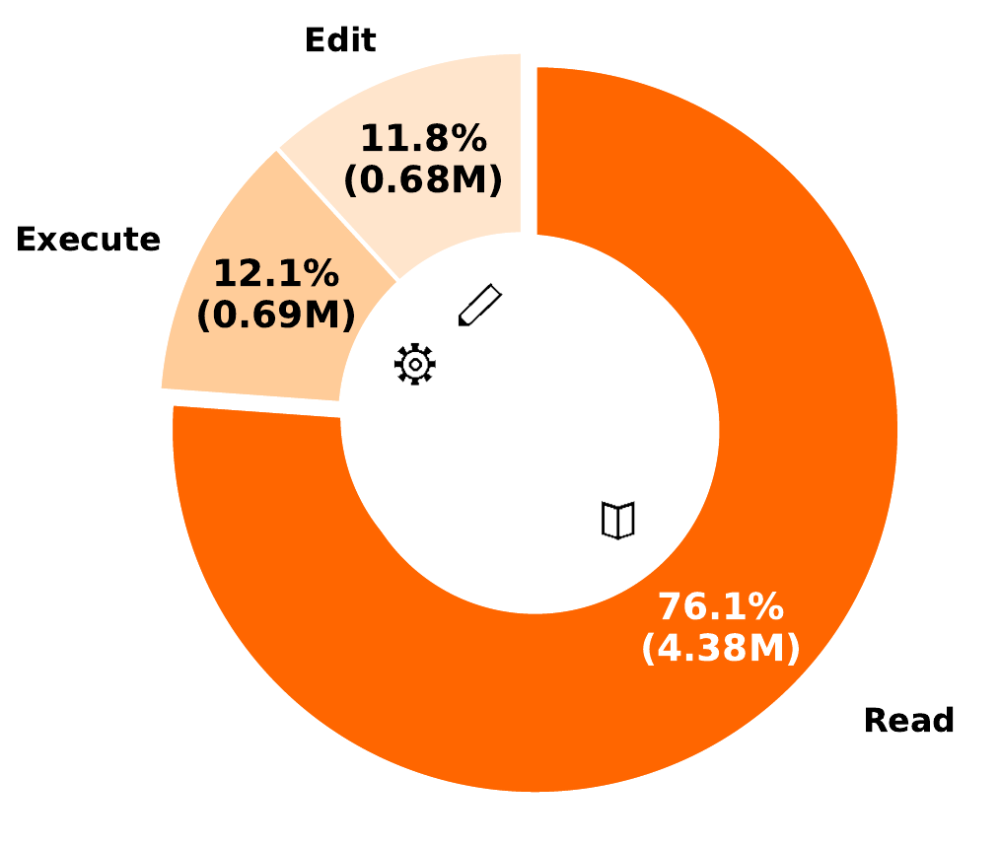
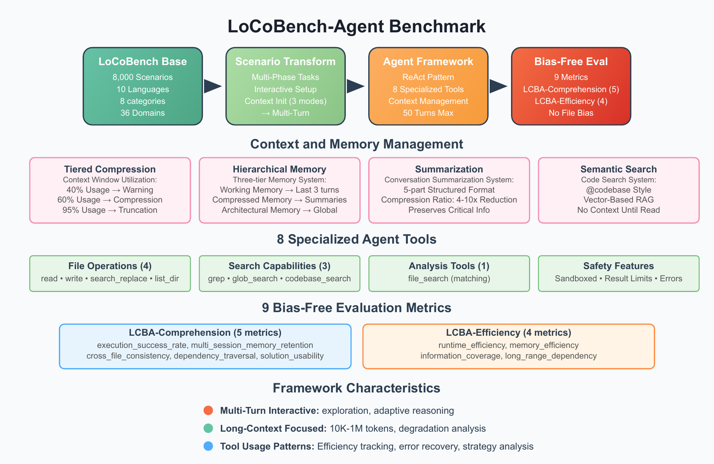
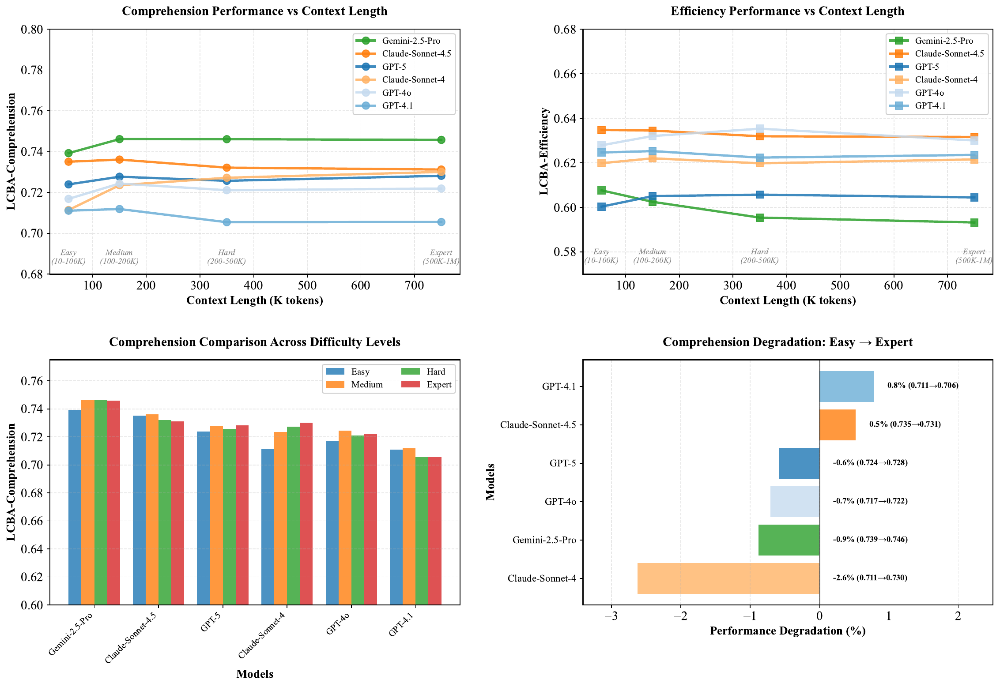
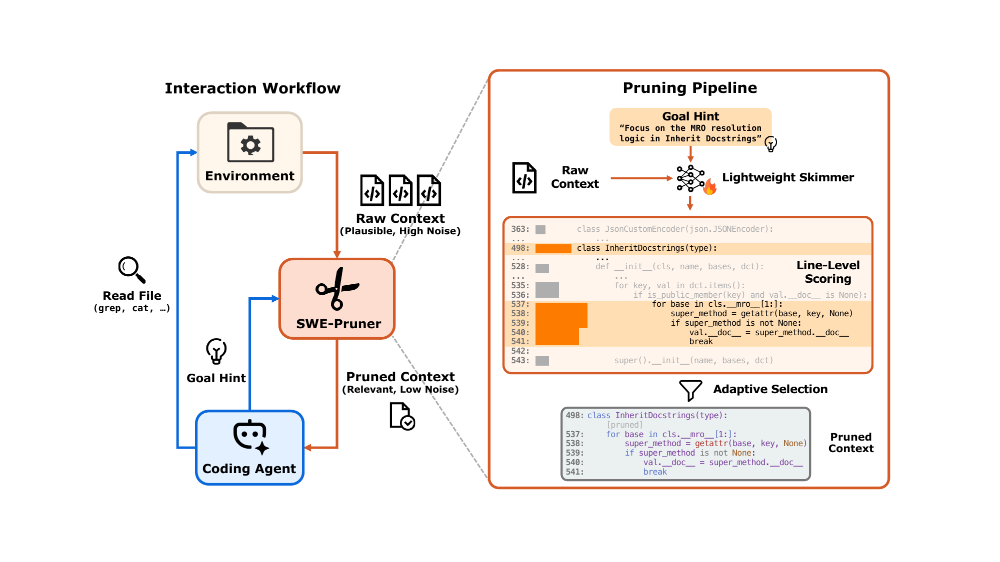
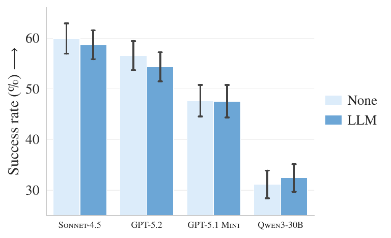
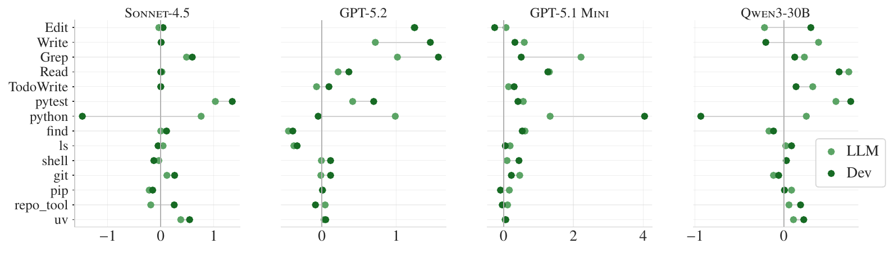

An interactive explainer
How coding agents handle a codebase that does not fit
A two-million-line repository is about forty million tokens. A 200,000-token context
window holds one two-hundredth of it. So when Claude Code or Codex works on a large
codebase, the interesting question was never "is the window big enough" — it never is.
The question is which few thousand tokens end up inside it, and who decides. This post
walks through the machinery that makes that decision: agentic search instead of a vector
database, compaction that fires at a measured threshold, and sub-agents that read a lot
and report back a little. Then it looks at what experiments actually show. Two results
pull in opposite directions: models get measurably worse as their input grows, yet coding
agents tested from 10,000 to 1,000,000 tokens of codebase barely move — comprehension
scores stay at 0.71–0.75 across the whole range. And the documentation
advice everyone repeats turns out to be on shaky ground: in a controlled study of four
agents, machine-written AGENTS.md files did not improve success rates
at all while raising cost by 20–23%.

Start with the number that frames everything else. A "token" is the unit a language model reads — roughly three to four characters of code, so a 40-line function is about 400 tokens. The Linux kernel is around 40 million lines. A large company monorepo might be two million lines, which is about 40 million tokens once you count whitespace and imports. Claude Code and Codex both work with context windows in the 200,000 to 1,000,000 token range. Even at a million, you are holding 2.5% of that repository. At 200,000 you are holding half a percent.
So "how does the agent handle a large codebase" cannot be answered with "it has a big window." Every real coding agent is a system for deciding, turn by turn, which half percent to look at. That system has three moving parts: a search strategy that finds candidate files without reading them all, a compaction strategy that throws away history when the window fills, and a delegation strategy that pushes expensive reading into a separate context that gets discarded afterwards. This post explains all three in mechanical detail — thresholds, token budgets, what is kept and what is dropped.
Then it does the harder thing, which is checking the folklore against measurements. You
have probably been told that bigger context windows make agents smarter, that a
well-written AGENTS.md or CLAUDE.md file makes a large difference,
and that models get confused by long inputs. One of those three is well supported, one is
contradicted by controlled experiments, and one is true of models but surprisingly not
true of agents. We will go through the studies one at a time with their actual numbers.
1. The arithmetic of a large repository
Let us do the counting carefully, because the ratios drive every design decision that follows. Take a repository with $F$ source files averaging $L$ lines each. Code is dense: one line of typical Python or TypeScript is about 10 tokens once you count the indentation, the identifiers, and the punctuation. So the whole repository is
$$ T_{\text{repo}} \;=\; F \times L \times 10 $$
where $T_{\text{repo}}$ is the total token count of the repository, $F$ is the number of source files, $L$ is the average lines per file, and the factor 10 is the tokens-per-line rate. For a mid-size service with $F = 3{,}000$ files and $L = 250$ lines, that is $3{,}000 \times 250 \times 10 = 7{,}500{,}000$ tokens. Against a 200,000-token window, the fraction that fits is
$$ \frac{C}{T_{\text{repo}}} \;=\; \frac{200{,}000}{7{,}500{,}000} \;=\; 2.7\% $$
where $C$ is the context window size. And 2.7% is generous, because the window is not
empty when the task starts. The system prompt that defines the agent's tools and behaviour
is several thousand tokens. Tool definitions are a few thousand more. Any
CLAUDE.md or AGENTS.md file is loaded on top of that. The user's
request adds a few hundred. Before the agent reads a single line of your code, 10,000 to
30,000 tokens are already gone. Call the leftover the working budget:
$$ B \;=\; C - T_{\text{sys}} - T_{\text{tools}} - T_{\text{memory}} - T_{\text{task}} $$
with $T_{\text{sys}}$ the system prompt, $T_{\text{tools}}$ the tool schemas, $T_{\text{memory}}$ the project instruction files, and $T_{\text{task}}$ the user's request. On a 200,000-token window with a 20,000-token overhead, $B = 180{,}000$. That buys you maybe 45 files at 4,000 tokens each — if you spend all of it on file contents and keep nothing else, which you cannot, because the agent's own reasoning, its tool calls, test output, and error messages all accumulate in the same window as the conversation goes on.
The widget below lets you turn the knobs. Set a repository size, pick a strategy, and watch how much of the window each approach consumes. The point to notice is not that searching wins — that is obvious — but how much it wins by, and at what point the naive approach stops being possible at all rather than merely wasteful.
2. Why the agent searches instead of indexing
There is an obvious answer to "the repository does not fit": build an index. Split every file into chunks, run each chunk through an embedding model to get a vector (a list of numbers that places similar text near each other), store the vectors in a database, and at query time embed the user's question and fetch the nearest chunks. This is retrieval augmented generation, usually shortened to RAG, and for two years it was the assumed architecture for anything involving a large document collection.
Claude Code was built that way at first and then stopped. Boris Cherny, who created it,
has described early versions using RAG with a local vector database, and the team finding
that plain agentic search worked better — not marginally, but clearly enough to
delete the index. The replacement is three tools you already know from a terminal:
Glob matches file paths against a pattern, Grep searches file
contents for a regular expression, and Read loads a specific file, optionally
a specific line range. The model calls them in a loop, the way a person would.
It is worth being precise about why the simple thing wins here, because the reasons are specific to code and do not all transfer to other domains.
Code has exact names, and embeddings blur them. If you are looking for the
function retry_backoff, a regular expression finds every one of its uses and
no false ones. An embedding search finds things that are semantically near retry
logic, which includes the timeout handler, the circuit breaker, and a comment about
flakiness — and it may rank the actual definition below all of them. Similarity is
the wrong tool when you have an exact identifier, and in code you almost always do.
An index goes stale, and code changes constantly. A vector database is a
snapshot. The moment the agent edits a file — which is the entire point of a coding
agent — the index describes a repository that no longer exists. You can re-index on
every write, but now you have a background job racing the agent. Grep reads
the working tree as it is right now, including edits made thirty seconds ago and files that
were never committed.
Search is a decision the model can correct. RAG retrieves once, at the start, on the basis of the original question, and then the model is stuck with whatever came back. Agentic search is a loop: the model greps, sees twelve hits, notices that eleven are in a test directory, greps again with a narrower pattern, opens two files, discovers the real logic is in a base class, and follows the import. Each step uses what the previous step revealed. Anthropic's engineering write-up calls this just-in-time retrieval, and frames the contrast as keeping lightweight identifiers — file paths, patterns, queries — in context rather than the data itself, then loading data only at the moment it is needed.
An index is an operational burden. Where do the vectors live for a private
repository? Who deletes them when someone revokes access? What happens on a machine that
is offline? The tools grep and find have none of these questions;
they run on the file system that is already there, with the permissions that already apply.
The cost of this choice is turns. A vector search returns candidates in one round trip; agentic search may take five or ten tool calls to reach the same files, and each round trip is an API call with latency. That is exactly the trade the numbers in the teaser figure describe: 76.1% of all tokens going to read operations is the price of finding things by looking rather than by index. The bet is that spending tokens on precise, current, correctable search beats spending them on a fuzzy snapshot — and for code, the bet has held.
3. What is actually inside the window
Now that we know the agent pulls rather than pre-loads, we can describe the window's contents precisely at any moment in a session. It holds, in order:
[ system prompt ] agent role, tool descriptions, safety rules
[ tool schemas ] JSON definitions of Read/Grep/Glob/Bash/Edit/...
[ project memory ] CLAUDE.md or AGENTS.md, re-sent every turn
[ user task ] "fix the retry logic so it backs off exponentially"
[ turn 1: assistant ] reasoning + a Grep call
[ turn 1: tool result ] 47 matching lines with file paths
[ turn 2: assistant ] reasoning + two Read calls
[ turn 2: tool result ] the full text of two files <-- large
[ turn 3: assistant ] reasoning + an Edit call
[ turn 3: tool result ] "edit applied"
[ turn 4: assistant ] reasoning + a Bash call to run tests
[ turn 4: tool result ] 600 lines of pytest output <-- large
... and this list only ever grows
Two properties of that list explain everything that follows. The first is that it is append-only within a turn: the model does not have a way to reach back and delete turn 2's file contents once it is done with them. Everything read stays read, and every turn re-sends the whole list. The second is that tool results dominate. The model's own reasoning is a few hundred tokens per turn. A file read is a few thousand. A verbose test run is several thousand. This is the mechanism behind the 76.1% figure: it is not that the agent reads unnecessary files, it is that the files it reads stay in the transcript for the rest of the session, and get re-sent on every subsequent turn.
The animation below is the whole idea in one picture: the naive attempt, then the loop that replaces it. Watch what happens to the window when the search results come in, and then what compaction does to the accumulated history.
Left: the repository, forty million tokens of it. Right: the context window, two hundred thousand. The first attempt pours the codebase in and overflows — half a percent fits. The second keeps the repository outside the window and uses it as a searchable index: a grep sweep marks four matching files, those four get read in, and the window holds a working set rather than a codebase. Then twelve more turns of tool output push it to 92% full, and compaction rewrites the history into a summary plus a handful of re-read files, dropping back to 49% so the session can continue.
That last step is the one people misunderstand most often, so it gets its own section with the real thresholds.
4. Compaction, measured to the token
Compaction is what happens when the append-only list gets close to the window size. The agent asks a model to summarize the conversation so far, throws away the original messages, and continues with the summary in their place. The details differ between tools, and the details are where the behaviour you notice comes from.
Codex CLI
Codex computes its trigger point from the window size rather than using a fixed percentage. The rule reserves room for the model's own output, then leaves a further safety margin:
$$ \begin{aligned} W_{\text{eff}} &= C - \min(O_{\max},\; 20{,}000) \\ \theta &= W_{\text{eff}} - 13{,}000 \end{aligned} $$
Here $C$ is the model's context window, $O_{\max}$ is the maximum output tokens configured
for the request, $W_{\text{eff}}$ is the effective window after reserving output space, and
$\theta$ is the token count at which compaction fires. Work it through for a 200,000-token
window with the output reservation capped at 20,000:
$W_{\text{eff}} = 200{,}000 - 20{,}000 = 180{,}000$, then
$\theta = 180{,}000 - 13{,}000 = 167{,}000$. So compaction begins at about 167,000 tokens,
which is 83.5% of the window. You can override this with
model_auto_compact_token_limit in config.toml, though recent
versions clamp custom values to 90% of capacity so you cannot set a threshold that leaves no
room to write the summary.
Codex then does something clever and something opaque. The clever part: after compaction it automatically re-reads up to five recently edited files, with a total budget of 50,000 tokens and 5,000 per file. A summary is a poor substitute for source code you are in the middle of editing, so the files you were actually working on come back in full rather than as a description. The opaque part: the server-side compaction path returns an encrypted blob rather than readable text. It preserves tool state and reasoning traces, but you cannot inspect what was kept.
That re-read policy has a failure mode worth knowing, because it was observed in the wild. In version 0.118 the re-read cycle interacted badly with the threshold: bringing 50,000 tokens of files straight back in after compaction meant the window refilled quickly, so compaction fired again sooner, which triggered another re-read. Users on projects with more than about 100KB of essential context saw compaction happen roughly twice as often as before. The lesson generalises: any recovery mechanism that restores context after compaction is in tension with the threshold that caused it.
Claude Code
Claude Code splits the job across three mechanisms rather than one.
Microcompaction handles bulky tool results early, before the window is
anywhere near full — a 600-line test output that has already served its purpose gets
cleared while the rest of the conversation stays intact. Anthropic's guidance calls clearing
old tool results the safest, lightest form of compaction, and the reason is that a tool
result is the one message type whose value reliably drops to nothing once the agent has acted
on it. Auto-compaction is the full summarization, firing when the window
approaches its limit and producing a human-readable summary you can scroll back and inspect.
Manual compaction is the /compact command, and it takes
instructions: /compact focus on the API changes and ignore the test refactoring.
That third one is the meaningful difference between the tools. Compaction is fundamentally a guess about which details will matter later, and the person at the keyboard usually knows the answer. Being able to say "keep the database schema decisions, drop the CSS work" turns a lossy automatic process into a directed one.
The other structural point, and the one that connects to section 8: the
CLAUDE.md file survives compaction. It is not part of the conversation
being summarized; it is re-sent on every turn as part of the prompt. Anything you need the
agent to still know at turn 90 belongs there rather than in a message at turn 3, because a
message at turn 3 is exactly what compaction eats.
What this costs you
Compaction is lossy, and the loss is not random — it is biased toward whatever the summarizing model judged unimportant at the moment it ran. Anthropic's framing is to tune for recall first (keep everything that might matter, accept a longer summary) and improve precision afterwards, because a summary that is too long merely costs tokens while a summary that dropped the one constraint you cared about costs you the task.
The widget below runs a session forward turn by turn under each tool's rules. Scrub the timeline and watch the window fill, see where each mechanism fires, and see what is left standing afterwards.
5. Sub-agents: reading a lot, returning a little
There is a third strategy, and it is the one that scales furthest. Instead of reading twenty files into the main conversation, the agent starts a sub-agent: a fresh model instance with its own empty context window and a narrow assignment. The sub-agent reads the twenty files, does whatever analysis is needed, and returns a summary. Anthropic's guidance puts that return at roughly 1,000 to 2,000 tokens. Then the sub-agent's context is discarded entirely.
The accounting is the whole point. Suppose the question is "which modules call the payments API, and do any of them assume it is synchronous?" Answering it honestly means reading maybe 60,000 tokens of code. Done in the main conversation, that 60,000 tokens is now permanently in the transcript and re-sent on every subsequent turn for the rest of the session. Done in a sub-agent, the main conversation pays 1,500 tokens for the answer. The compression ratio is
$$ \frac{T_{\text{read}}}{T_{\text{returned}}} \;=\; \frac{60{,}000}{1{,}500} \;=\; 40\times $$
and, more importantly, it is 40× permanently, because the cost you avoided was being charged on every future turn, not just once.
Anthropic's write-up on their multi-agent research system gives the strongest evidence that this works, along with an honest account of the price. Their orchestrator-worker setup — a lead agent that plans, three to five sub-agents that explore in parallel, and a separate pass that checks citations — scored 90.2% higher than a single Claude Opus 4 agent on their internal research evaluation. But it used about 15× more tokens than a normal chat interaction. And when they analysed what predicted performance, three factors explained 95% of the variance between runs: token usage alone accounted for 80%, number of tool calls about 10%, and choice of model about 5%.
That 80% figure deserves a moment, because it is easy to read as a happy result and it is not entirely one. It says that most of what made the multi-agent system better was that it did more work — read more, searched more, spent more. Structure helps by letting you spend more tokens without the main context degrading, but the spending is doing much of the lifting. Anthropic draw the practical conclusion themselves: the economics only make sense when the task is valuable enough to absorb a 15× token multiplier. For a question about a codebase that would take an engineer two hours, that is easy. For "what does this function do", it is not.
Sub-agents also have a real failure mode. The main agent only sees the summary, so if the sub-agent misunderstood the assignment, the main agent has no way to notice — the evidence was thrown away with the sub-agent's context. Delegation trades inspectability for space. That is usually a good trade for a search that produces a factual answer, and a bad one for a judgement call you would want to check the reasoning behind.
6. Does more context make agents worse?
Now to your second question: what do experiments actually show about context length and performance? The literature splits cleanly into results about models and results about agents, and they disagree. Take the models first, because that side is older and better established.
Lost in the middle (2023)
Liu and colleagues ran a clean experiment. Give a model a question and $k$ documents, exactly one of which contains the answer, and vary where in the list that one document sits. Nothing else changes — same question, same documents, same total length. Only the position moves. If a model used its context evenly, the curve would be flat.
It is not flat, it is U-shaped. Accuracy is highest when the answer is in the first document or the last, and falls sharply in the middle. With 20 documents the gap between first position and middle position is on the order of 40 percentage points. And the gap widens as you add documents: going from 10 to 20 to 30 documents, the middle keeps sinking while the ends hold up. Their most pointed result is the comparison between a model and its own extended-context version — GPT-3.5-Turbo against GPT-3.5-Turbo-16K. On inputs that fit in both, the 16K version was not better. Extending the window did not teach the model to use the middle of it.
Context rot (2025)
Chroma's report pushed this much further, across 18 models — Claude Opus 4 and the Sonnet line, OpenAI's o3 and the GPT-4.1 family, Gemini 2.5 Pro and Flash, and Qwen3 at three sizes. Their finding, stated plainly: performance degrades as input length grows for every model tested, including on tasks so simple that length should not matter at all. Four specific results are worth carrying with you.
Wording matters more as the input grows. When the question shares vocabulary with the target text, models hold up well. When the question is a paraphrase, accuracy falls faster with length. The model is doing something closer to lexical matching than we would like, and the crutch gets weaker as there is more to match against.
Distractors compound. A "distractor" is a passage on the same topic that does not contain the answer. One distractor hurts. Four hurt more. They also hurt unevenly — particular distractors caused much larger drops than others, which means you cannot predict the damage from a count. Model families differ in how they fail: Claude models tended to abstain when unsure, and had the lowest rate of confidently wrong answers, while GPT models had the highest.
Structure hurts. This is the result nobody predicts. They compared a haystack of coherent prose against the same sentences shuffled into random order. All 18 models did better on the shuffled version. Models perform worse when the surrounding text has a logical flow. Coherent context creates plausible-looking alternatives that pull attention away from the one passage that matters.
Focus beats completeness. On LongMemEval, a conversational question-answering benchmark, they compared full prompts of about 113,000 tokens against focused prompts of about 300 tokens containing just the relevant part. Every model did significantly better on the focused version. The extra 112,700 tokens were not neutral filler; they were a cost. Claude Opus 4 and Sonnet 4 showed the largest gaps, again because they abstain when the context is ambiguous. Turning on extended thinking narrowed the gaps but did not close them.
Try it below. The widget models the shape of these findings — position, length, distractors, coherent versus shuffled — so you can see how they interact rather than reading four separate claims.
7. The experiment that says agents are fine
Everything in section 6 is about models given a large input in one shot. LoCoBench-Agent, from Salesforce AI Research, asked the different question: what happens to an agent — a model with tools, in a multi-turn loop — as the codebase grows?

The design matters, so here it is precisely. Projects contain 10 to 100 files with 100 to 10,000 lines each, across 10 programming languages. The four difficulty levels differ by how much codebase there is: 10K tokens, 50K, 200K, and 1M. Six agents were evaluated: GPT-5, GPT-4.1, GPT-4o, Claude Sonnet 4.5, Claude Sonnet 4, and Gemini 2.5 Pro. The measurement is split into a comprehension score (execution success, memory retention, cross-file consistency, dependency traversal, solution usability) and an efficiency score, each rescaled to a fixed range to avoid ceiling effects.
Crucially, the agents do not receive the codebase in their prompt. They get tools: file operations, and a semantic search over the code chunked at function and class boundaries. The paper is explicit that search queries cost no context tokens until the agent actually reads a result. So "1M token context" here means "a codebase that is 1M tokens", not "1M tokens in the window."
With that setup, here is what happened as the codebase grew from 10K to 1M tokens.
| Codebase size | Gemini 2.5 Pro | Claude Sonnet 4.5 | GPT-5 | Claude Sonnet 4 |
|---|---|---|---|---|
| Easy (10K) | 0.7393 | 0.7351 | 0.7240 | 0.7114 |
| Medium (50K) | 0.7461 | 0.7361 | 0.7277 | 0.7236 |
| Hard (200K) | 0.7461 | 0.7322 | 0.7257 | 0.7272 |
| Expert (1M) | 0.7458 | 0.7312 | 0.7282 | 0.7301 |
Comprehension score against codebase size (LoCoBench-Agent, arXiv 2511.13998, Table 5). A hundredfold increase in codebase size moves every model by less than 0.03. Two models — GPT-5 and Claude Sonnet 4 — score higher on the largest codebases than the smallest.

Total change from Easy to Expert runs between a 2.6% drop and a 0.6% gain. The authors' phrase is that agents show "remarkable long-context robustness." The paper offers two explanations for the models that improved: larger projects tend to have more explicit architecture documentation and clearer module boundaries, which genuinely help; and agents facing a big codebase adopt more systematic exploration rather than the ad-hoc poking that suffices in a small one.
How to hold both results at once
So does long context hurt or not? The resolution is in the same paper's related-work section, and it is the single most useful sentence in this whole post. The earlier benchmark LoCoBench used the same scenarios in a single-turn setting — the model receives the entire codebase in its prompt and answers. In that setting, Claude 3.5 Sonnet's score fell from 29% to 3% as context grew toward 1M tokens. Same scenarios. Same scale. Near-total collapse.
Put the two side by side:
| Setting | How the codebase reaches the model | Effect of growing to 1M tokens |
|---|---|---|
| LoCoBench (single-turn) |
All of it, in the prompt, at once | Collapse: 29% → 3% |
| LoCoBench-Agent (multi-turn) |
Through search and file-read tools, a few thousand tokens at a time | Flat: 0.71–0.75 throughout |
The harness is what changed. Context rot is real and it is architectural — nobody in this literature disputes that. What the agent loop does is make sure the model is never in the regime where it bites. The model does not read a 1M-token codebase; it reads a 6,000-token slice that it chose, with the rest of the repository sitting on disk as a searchable index. The long-context problem got converted into a retrieval problem, and retrieval problems are solved with tools rather than with a bigger window.
Which reframes what a larger context window buys you. Not "the agent can now understand more code at once." Rather: more room before compaction fires, so longer runs of uninterrupted work, and fewer summarization steps that might drop something. That is a real benefit. It is just a different one than the marketing suggests.
The part that is genuinely unsolved
The same paper contains a result that should temper the optimism. Multi-session memory retention — can the agent still keep track of things across a long, extended session — scored 0.32 to 0.37 for every model tested. Universally low. And, pointedly, independent of context window size, from 128K to 1M. The authors note that models with 128K windows achieved higher retention than models with 1M windows, and conclude that compression quality matters more than raw capacity.
This is where the honest answer to "does a bigger window help" lands. Finding the right code in a big repository: solved, by tools. Editing it: solved. Remembering the decision you made forty turns ago and why: not solved, by anyone, at any window size. That is the boundary of the current state of the art, and it is the reason the next section matters — written files are the only memory that does not decay.
How much of the context was worth keeping anyway
One more experiment sharpens the point. SWE-Pruner (ByteDance Seed and Shanghai Jiao Tong) sits between the agent and the file system: when the agent reads a file, a small 0.6-billion parameter model scores each line for relevance to what the agent said it was looking for, and only lines scoring above a threshold are passed through. The agent never sees the rest.

grep or cat.
Before the output reaches it, a lightweight skimmer scores every line against a "goal hint"
the agent generated (for example, "focus on MRO resolution logic") and drops the lines that
do not score. Structure is preserved so the code stays syntactically readable.
(Figure from arXiv 2601.16746.)
On SWE-Bench Verified with Claude Sonnet 4.5, average tokens per task fell from 0.911M to 0.701M — a 23.1% cut — and interaction rounds fell from 51.0 to 41.7. Success rate went from 353/500 to 360/500, a gain of 1.4 percentage points. With GLM-4.6 the token cut was 38.3% and success rose 1.2 points. Cutting a third of what the agent reads did not hurt; it helped slightly, and the paper's explanation is the mechanism from section 6 — the removed lines were distractors, and removing them let the agent commit to a hypothesis instead of making another exploratory read.
| Model | Setting | Rounds | Solved / 500 | Success | Tokens (M) |
|---|---|---|---|---|---|
| Claude Sonnet 4.5 | Mini SWE Agent | 51.0 | 353 | 70.6% | 0.911 |
| + SWE-Pruner | 41.7 | 360 | 72.0% | 0.701 (−23.1%) | |
| GLM 4.6 | Mini SWE Agent | 49.3 | 277 | 55.4% | 0.791 |
| + SWE-Pruner | 36.6 | 283 | 56.6% | 0.488 (−38.3%) |
Read that table as a statement about the baseline rather than about the tool. If you can delete a quarter to a third of everything an agent reads and it gets slightly better, then a quarter to a third of what it was reading was doing no work. The window was not too small. It was full of the wrong things.
8. Structuring docs: what the data says
Your third question is the practical one: as a codebase grows, how should its documentation be organised so agents find the right context? There is a large amount of confident advice about this. There are also, as of 2026, two controlled studies, and they do not agree with each other or with the advice.
Study one: it makes things faster
The first study took 10 repositories that already had a root-level AGENTS.md, and
124 merged pull requests from them, each limited to at most 100 changed lines across at most 5
files. Every task ran twice against OpenAI Codex with gpt-5.2-codex, from an identical
repository snapshot: once with the AGENTS.md present, once with it deleted. The
results were consistent and statistically significant by a Wilcoxon signed-rank test:
| Metric | Without AGENTS.md | With AGENTS.md | Change |
|---|---|---|---|
| Median time (s) | 98.57 | 70.34 | −28.6% |
| Mean time (s) | 162.94 | 129.91 | −20.3% |
| Median output tokens | 2,925 | 2,440 | −16.6% |
| Mean output tokens | 5,744.81 | 4,591.46 | −20.1% |
The mechanism is the one you would guess. Without the file, the agent spends turns figuring out
that this project uses uv rather than pip, that tests run with a
particular command, that the source lives under src/. With the file, it skips
that. Note carefully what this study measured: time and output tokens. It did
not measure whether the agent solved the task.
Study two: it does not make things better
The second study, from ETH Zurich, measured exactly that, and got an uncomfortable answer. It used four agent-and-model pairings — Claude Code with Sonnet 4.5, Codex with GPT-5.2 and with GPT-5.1 mini, and Qwen Code with Qwen3-30B — all at temperature 0. Two benchmarks: SWE-Bench Lite (300 tasks, 11 popular Python repositories, none of which ship a context file) and a new benchmark the authors built of 138 tasks from 12 repositories that do have developer-written context files. Three conditions: no context file, a machine-generated one (produced by each agent's own recommended initialization command), and the developer's real one.

The numbers, as success rate percentages plus or minus standard error:
| Benchmark | Context file | Sonnet 4.5 | GPT-5.2 | GPT-5.1 mini | Qwen3-30B |
|---|---|---|---|---|---|
| SWE-Bench Lite | None | 59.9 ± 3.0 | 56.6 ± 2.9 | 47.7 ± 3.1 | 31.1 ± 2.7 |
| Machine-generated | 58.7 ± 2.9 | 54.4 ± 2.9 | 47.6 ± 3.2 | 32.4 ± 2.7 | |
| Repos that ship a context file | None | 73.2 ± 3.8 | 65.2 ± 4.1 | 54.3 ± 4.3 | 45.7 ± 4.3 |
| Machine-generated | 65.2 ± 4.1 | 68.1 ± 4.0 | 50.7 ± 4.3 | 47.1 ± 4.3 | |
| Developer-written | 70.3 ± 3.9 | 68.1 ± 4.0 | 55.8 ± 4.2 | 53.6 ± 4.3 |
Machine-generated files reduced the success rate in 5 of 8 settings, by 0.5% on average on SWE-Bench and 2% on the other benchmark. With p-values of 87% and 37%, the honest reading is not "they hurt" but "they do nothing" — the effect is indistinguishable from noise. Developer-written files did better, improving performance by 2.4% on average, and beating the machine-generated ones with a p-value of 3.8%, which is a real difference between the two kinds of file. But 2.4% against no file at all carries p = 21%, so even the human-written case is not a clear win over having nothing.
Meanwhile the cost went up in every single configuration:

grep, more file reads, more file writes. Agents follow the instructions
they are given. Following them costs steps. (Figure from arXiv 2602.11988.)
On SWE-Bench Lite with Sonnet 4.5, steps went from 54.4 to 57.2 and cost from $1.30 to $1.51. With GPT-5.2, cost went from $0.32 to $0.43. Averaged across agents, context files added 2.45 to 3.92 steps per task, for a 20% to 23% cost increase with p < 0.001%. The cost increase is far more statistically solid than any performance change.
The authors then tested the obvious objection — maybe the agents are ignoring the files.
They are not. When a context file mentions uv, agents use it 1.6 times per task
on average, against under 0.01 times when it is not mentioned. Repository-specific tools get
used 2.5 times per task when mentioned, against under 0.05 when not. Instruction-following is
excellent. For GPT-5.2, reasoning tokens went up by 22% with a machine-generated file
and 20% with a developer-written one. The agent reads your instructions, takes them seriously,
thinks harder, does more work — and finishes at about the same success rate.
The result that explains the contradiction
Two findings from this paper reconcile everything, including the disagreement with study one.
Codebase overviews do not work. Nearly every machine-generated file contained
one: 100% of Sonnet-generated files, 99% for GPT-5, 95% for Qwen. The authors measured whether
those overviews helped by counting how many steps an agent took before it first touched a file
that the real pull request had modified. If a written map of the repository is useful, that
number should drop. Across both benchmarks and all four agents, it did not meaningfully
change. Agents find files by searching, and searching is already good. A prose
description of the directory tree competes with grep and loses.
Context files mostly repeat what is already there. In an ablation where the
authors deleted all other documentation — the README, the contributor guide,
everything — machine-generated context files then improved performance by 2.7% on
average, and beat developer-written ones. The information was useful. It was just already
available, in files the agent could find on its own. Duplicating it into
AGENTS.md added tokens to every turn and information to none.
That also resolves the clash with study one. Study one measured speed on repositories that already had human-written context files, and found real savings. Study two measured success on a mix, and found the savings do not convert into more solved tasks. Both can be true: a good context file makes an agent reach the answer faster, and does not change whether it gets there. For a paid agent running at scale, faster is worth money. It is just not the same claim as "your agent will be smarter."
Build a context file below and watch what it costs. Every section you enable is tokens spent on every turn of every session, forever. The question the widget is asking you is whether the section earns that.
9. Rules that survive the evidence
Here is what is left standing once you take the measurements seriously. These are ordered by how much support they have.
Write down what cannot be discovered by looking
This is the single rule that follows directly from the data. The overview failed because the
agent can already see the directory tree. The build command succeeded because you cannot
derive "this repo uses uv and not pip" from reading source files
— it is a convention, held in people's heads. Apply the test to every line you are
thinking of writing: could a competent engineer figure this out in under a minute with
ls and grep? If yes, delete it. It is costing you tokens on
every turn to tell the agent something it would have found anyway.
What passes the test: the exact test command including flags. Which package manager. Code conventions that are enforced but not obvious. Directories that are generated and must not be edited by hand. Anything that is dangerous — "never run migrations against staging". Decisions with a reason behind them, like "this module deliberately avoids async because the driver is not thread-safe", which is invisible in the code and which an agent will otherwise helpfully undo.
What fails the test: a list of directories with descriptions. A summary of what each module does. The tech stack. The architecture diagram in prose. All discoverable, all measured as not helping.
Push instructions down the tree
Both Codex and Claude Code resolve context files by directory. The agent reads the nearest one as it works, with closer files taking precedence over the root. This is the correct structure for a large repository and it is underused. Rather than one 400-line root file that every session pays for in full, put 30 lines at the root that apply everywhere, and put the specifics next to the code they describe.
AGENTS.md 30 lines: monorepo layout, global safety rules
services/payments/AGENTS.md 20 lines: this service is PCI scope, never log card data
services/payments/migrations/ + how to write a migration here, and how to test it
packages/ui/AGENTS.md 15 lines: component conventions, storybook command
packages/legacy-etl/AGENTS.md 12 lines: yarn not pnpm, python 3.8, do not modernise
OpenAI's own Codex repository ships 88 nested AGENTS.md files. The token
arithmetic is the reason: an agent working in packages/ui pays for the root file
and the UI file, and never pays for the payments rules. In a monorepo with twenty services, the
difference between one flat file and a tree is the difference between paying for twenty
services' worth of conventions on every turn and paying for one.
Point at documents instead of copying them
This is the idea Anthropic call progressive disclosure, and it fits the just-in-time retrieval design exactly. A context file entry like:
# Authentication
Session handling is unusual here — tokens are rotated on every request.
Read docs/auth-design.md before changing anything under services/auth/.
costs about 40 tokens per turn and gives the agent a pointer plus the reason it matters. Pasting the whole design document costs 3,000 tokens per turn, and by the Chroma results it makes everything else in the window slightly harder to attend to. The pointer is read by the agent on the one task in twenty where authentication is involved, and ignored the rest of the time. That is the correct allocation.
Notice this is the same principle as agentic search, applied to prose. Keep identifiers in context; load contents on demand.
Make the codebase searchable, which helps more than describing it
Since agents find code by searching, the highest-value thing you can do for a large repository
is not documentation at all — it is making search work well. Distinctive, greppable names
beat generic ones: a function called handleData is invisible in a large codebase
because the string appears everywhere, while reconcilePaymentLedger is found in one
call. Consistent file naming means Glob patterns work. Dead code that still matches
your searches is worse than absent code, because it is a distractor in exactly the Chroma sense
— and remember that distractors compound unevenly.
Consider a ranked map rather than a written one
There is a version of "give the agent an overview" that works, and it is generated rather than written. Aider builds a repository map: parse every source file with tree-sitter to extract the symbols it defines and the symbols it references, build a graph where files are nodes and references are edges, and run a PageRank-style ranking over it. A symbol's importance is
$$ r(v) \;=\; \frac{1-d}{N} \;+\; d \sum_{u \in \mathcal{I}(v)} \frac{r(u)}{|\mathcal{O}(u)|} $$
where $r(v)$ is the rank of node $v$, $N$ is the number of nodes, $\mathcal{I}(v)$ is the set of nodes that reference $v$, $\mathcal{O}(u)$ is the set of nodes that $u$ references, and $d$ is a damping factor, conventionally 0.85. The recursive part is what makes it useful: being referenced by an important file counts for more than being referenced by an unimportant one, so importance flows transitively through the graph. Aider then fills a fixed token budget with the highest-ranked symbols, so the map is always the same size no matter how big the repository is.
This differs from a written overview in the two ways that matter. It cannot go stale, because it is regenerated from the current source. And it is ranked by actual use rather than by what someone thought was important when they wrote the README. The widget below builds one on a small dependency graph so you can see which symbols survive a shrinking budget.
Compact deliberately, and keep durable state in files
Two habits follow from sections 4 and 7. First, use manual compaction with instructions at
natural boundaries — after you finish a subtask, run /compact and say what
to keep. You know what the next hour needs; the summarizer is guessing. Second, and more
important given that memory retention measured 0.32–0.37 regardless of window size: for
anything that must survive, write it to a file. A file is not summarized, not compacted, and not
subject to attention dilution. Anthropic's long-running agent work is built on exactly this
— a progress file and a structured task list that the agent reads at the start of every
session and updates as it goes. Git commits with real messages do the same job. The context
window is working memory; the file system is long-term memory. Do not confuse them.
10. What it means
The three questions you started with have answers now, and two of them are not the answers the common advice would predict.
How do Claude Code and Codex handle a large codebase? By never trying to hold
it. The repository stays on disk and is treated as a searchable index. The agent pulls a few
thousand tokens at a time through Grep, Glob, and Read,
corrects course based on what it finds, and pushes large reads into sub-agents that return a
1,000–2,000 token summary and then vanish. When the transcript fills up, compaction rewrites
it — Codex at a computed threshold near 167,000 tokens on a 200,000-token window, followed
by re-reading up to 5 files under a 50,000-token budget; Claude Code through microcompaction of
tool results, then full summarization, with a /compact command that takes your
instructions about what to keep.
Does more context length improve agent performance? Much less than you would think, and for a reason worth internalising. Single-turn, the effect is severe: the same scenarios that hold flat for an agent collapse from 29% to 3% for a model given the whole codebase at once. Multi-turn with tools, comprehension stays in the 0.71–0.75 band from a 10,000-token codebase to a 1,000,000-token one. The harness makes the difference. It keeps the model in the input range where it is reliable, permanently, no matter how large the repository grows. A bigger window buys you fewer compactions and longer uninterrupted runs — a genuine benefit, and a different one from understanding more code. And the evidence goes further than "more context does not help": SWE-Pruner deleted 23–38% of everything the agent read and success rates went up by 1.2–1.4 points. A meaningful share of what a coding agent reads is actively getting in its way.
How should documentation be structured? Smaller than you have been told, and placed rather than centralised. Machine-generated context files produced no measurable improvement across four agents and two benchmarks while adding 20–23% to cost. Developer-written ones did better by 2.4%, which beats the machine-generated version significantly but does not clearly beat writing nothing. The failure is specific and diagnosable: codebase overviews do not speed up file discovery at all, and context files largely duplicate documentation the agent could find by itself — shown by the ablation where deleting all other docs suddenly made generated context files useful. So write the things that are not discoverable: commands, conventions, dangers, and decisions with reasons. Push them down the directory tree so a session pays only for the part it is working in. Point at longer documents instead of pasting them. And put your effort into making the codebase greppable, because that is the channel the agent actually uses.
Underneath all three answers is one shift. For thirty years, the constraint on understanding a
large codebase was human attention, and the response was documentation: write it down so nobody
has to hold it all. Agents have a different constraint. They read fast and search fast, so
finding things was never the hard part — the hard part is that everything they read stays
in the window, competing for attention with everything else, until something summarises it away.
That inverts the goal. Documentation for people is written to save reading. Documentation for
agents should be written to save space. The best thing you can put in an
AGENTS.md file is the smallest set of sentences that an agent could not have
obtained by looking — and then, unusually for documentation, the discipline to stop
writing.
The open problem is the one that no amount of good documentation fixes. Memory retention across long sessions sat at 0.32–0.37 for every model measured, unchanged from 128K windows to 1M ones. Finding code is solved. Changing it is solved. Remembering, forty turns later, the constraint you agreed to at turn three is not solved by anybody, and it will not be solved by a larger window — the measurement is flat across an eightfold increase. Until it is, the file system is the memory, and writing things down is not a workaround. It is the architecture.